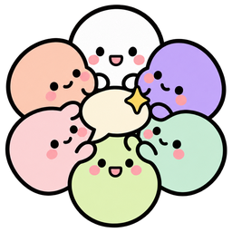

발언할 때 함께 적는 생각이에요. 다른 참석자에게는 보이지 않아요.
PDF, HWPX, Word, Excel, CSV, 텍스트를 읽어요. 자료는 합쳐서 약 20쪽(3만 6천 자)까지 넣을 수 있어요.
모두 선택이에요. 비워 두면 '나'라는 이름으로 참여해요. 적어 두면 사회자와 참석자들이 나를 알고 이야기해요.
결론, 회의록, 속마음, 상황판을 지금 화면 모습 그대로 담은 결과 페이지예요. 링크를 아는 사람은 누구나 볼 수 있어요.
아직 링크 공유가 켜져 있지 않아서, 결과 페이지를 파일로 저장했어요. 이 파일은 인터넷 없이도 열리고, 메일이나 메신저로 보내면 받은 사람도 같은 화면으로 볼 수 있어요.
링크 공유를 켜려면 운영자가 Vercel 프로젝트에 Blob 저장소를 한 번 연결하면 돼요.
A2A 명함 원본(JSON) 보기